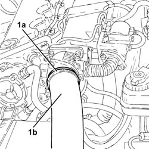
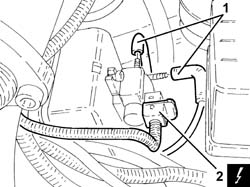
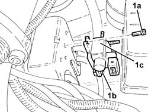
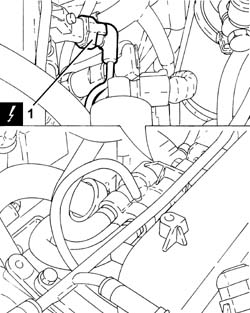
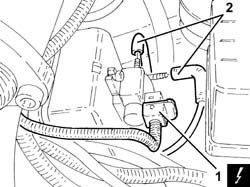
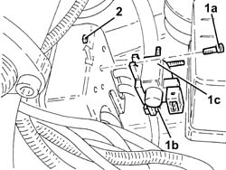
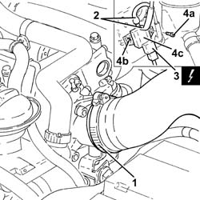
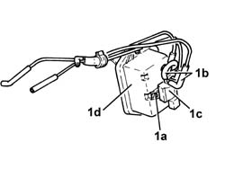

1060G72 solenoid on vacuum tank for throttle body pneumatic valve r r
- Path
- Procedures > 10 ENGINE > 1060 DIESEL FUEL INJECTION > 1060G pressure pump electric control > 1060G72 solenoid on vacuum tank for throttle body pneumatic valve r r
- Kind
- repair procedure (removal / refitting; the operation number is the code)
- Applies to
- engines: 1.9 JTD 8v , 1.9 JTD 16v, 2.4 JTD 10v, 2.4 JTD 20v; all production periods
- Interactive page
- https://sloeber94.github.io/elrnDB-a156/en/#/3237822
Applies to: engines: 1.9 JTD 8v ; all production periods; only with equipment: Euro 3
 Removing
Removing
 Refitting
RefittingEnsure that the ignition key is in the stop OFF, then disconnect the battery negative terminal.
 | Name | Connector |
|---|---|---|
- | Battery |
Proceed with the removal 1016A10 sound-proofing cover - r + r .
1. Loosen band (1a) and disconnect the air delivery sleeve from heat exchanger to intake manifold (1b), throttle body connector side.

Applies to: engines: 1.9 JTD 8v ; all production periods; only with equipment: Euro 3
1. Disconnect the vacuum pipe from the solenoid on the vacuum tank for the throttle body pneumatic valve.
2. Disconnect the solenoid electrical connection on the vacuum tank for the throttle body pneumatic valve.
| Name | Connector |
|---|---|---|
2 | Butterfly casing solenoid valve |

Applies to: engines: 1.9 JTD 8v ; all production periods; only with equipment: Euro 3
1. Undo upper bolt (1a), loosen lower bolt (1b), then withdraw and remove the solenoid on the vacuum tank for the throttle body pneumatic valve (1c) complete with lower bolt pad.
Recover the upper bolt pad.

Applies to: engines: 1.9 JTD 8v ; all production periods; only with equipment: Euro 3
Refitting
RemovingRefit the solenoid to the vacuum tank for the throttle body pneumatic valve and secure with the bolts and pads.
Connect the electrical connection to the solenoid on the vacuum tank for the throttle body pneumatic valve.
Connect the vacuum pipes to the solenoid on the vacuum tank for the throttle body pneumatic valve.
Connect the air delivery sleeve from the heat exchanger to the intake manifold, throttle body connector side, and secure with a band.
Proceed with the refitting 1016A10 sound-proofing cover - r + r .
Connect the battery terminal (-).
Applies to: engines: 2.4 JTD 10v; all production periods; only with equipment: Euro 3
Removing
RefittingEnsure that the ignition key is in the stop OFF, then disconnect the battery negative terminal.
| Name | Connector |
|---|---|---|
- | Battery |
Proceed with the removal 1016A10 sound-proofing cover - r + r .
1. Disconnect the electrical connection from the excess pressure sensor.
| Name | Connector |
|---|---|---|
1 | Turbocharging sensor |

Applies to: engines: 2.4 JTD 10v; all production periods; only with equipment: Euro 3
1. Disconnect the electrical connection from the solenoid on the vacuum tank.
| Name | Connector |
|---|---|---|
1 | Butterfly casing solenoid valve |
2. Disconnect the pipes from the solenoid on the vacuum reservoir.

Applies to: engines: 2.4 JTD 10v; all production periods; only with equipment: Euro 3
1. Undo the top bolt (1a), loosen the lower bolt (1b), then withdraw and remove the solenoid on the vacuum reservoir (1c) complete with lower bolt pad.
2. Recover the upper bolt pad.

Applies to: engines: 2.4 JTD 10v; all production periods; only with equipment: Euro 3
Refitting
RemovingRefit the solenoid to the vacuum tank for the throttle body pneumatic valve and secure with the bolts and pads.
Connect the pipes to the solenoid on the vacuum reservoir.
Connect the electrical connection to the solenoid on the vacuum tank.
Connect the electrical connection to the excess pressure sensor.
Proceed with the refitting 1016A10 sound-proofing cover - r + r .
Connect the battery terminal (-).
Applies to: engines: 1.9 JTD 16v; all production periods
Removing
RefittingProceed with removal 1016A10 sound-proofing cover - r + r
Ensure that the ignition key is in the OFF position, then disconnect the negative battery terminal (-).
| Name | Connector |
|---|---|---|
- | Battery |
1. Loosen the band and disconnect the air intake hose from the connector on the throttle casing.
2. Disconnect the vacuum pipe from the solenoid on the vacuum tank for the throttle body pneumatic valve.
3. Disconnect the solenoid electrical connection on the vacuum tank for the throttle body pneumatic valve.
| Name | Connector |
|---|---|---|
3 | Butterfly casing solenoid valve |
4. Undo the bolt (4a), loosen the bolt (4b), then withdraw and remove the solenoid on the vacuum reservoir for the throttle body pneumatic valve (4c).

Applies to: engines: 1.9 JTD 16v; all production periods
Refitting
RemovingRefit the solenoid to the vacuum reservoir for the throttle body pneumatic valve and secure it using the bolts.
Connect the electrical connection to the solenoid on the vacuum tank for the throttle body pneumatic valve.
Connect the vacuum pipes to the solenoid on the vacuum tank for the throttle body pneumatic valve.
Connect the air inlet hose to the connector on the throttle casing and tighten the band.
Connect the negative (-) battery terminal
Proceed with refitting 1016A10 sound-proofing cover - r + r
Applies to: engines: 2.4 JTD 20v; all production periods
Removing
RefittingProceed with removal 1016A10 sound-proofing cover - r + r .
Proceed with removal 1060F50 fuel return manifold - r r .
Proceed with removal 1060G70 vacum tank for controlling engine air intake r r .
1. Undo the bolts (1a), disconnect the vacuum pipes (1b), then remove the solenoid (1c) from the vacuum reservoir (1d).

Applies to: engines: 2.4 JTD 20v; all production periods
Refitting
RemovingFit the solenoid to the vacuum tank and secure by tightening retaining bolts.
Connect the vacuum pipes.
Proceed with refitting 1060G70 vacum tank for controlling engine air intake r r .
Proceed with refitting 1060F50 fuel return manifold - r r .
Proceed with refitting 1016A10 sound-proofing cover - r + r .